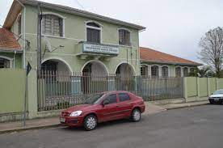

O Grupo Dario Veloso, teve início no ano de 1939, com ensino de 1ª à 4ª série, funcionando no prédio onde atualmente está localizada a Escola Estadual Nicolau Copérnico. Segundo dados encontrados, o prédio do Colégio Dario Veloso foi inaugurado no ano de 1952. No ano de 1956 também foi criada neste prédio a Escola Normal Regional Professor Rocha Pombo, sendo que em 1965, a Escola Normal de Grau Ginasial Professor Rocha Pombo foi transformada em Escola Normal de Grau Colegial Professor Rocha Pombo. Em 1971, por força da Lei nº 5.692/71, a Escola Normal Colegial Professor Rocha Pombo, foi unificada no atual Colégio Estadual Professor Dario Veloso. Este Colégio teve seu plano de implantação do Ensino de Segundo Grau, com a programação das habilitações: Magistério (plena) e Comércio (básica), aprovado em caráter provisório em 1979 e definitivamente em 1982. Em 1992, devido à municipalização do Ensino de 1ª à 4ª série foi novamente desmembrada, ficando Escola Municipal Professor Orlando de Carvalho para o 1º grau e continuando Colégio Estadual Professor Dario Veloso para o 2º grau. No ano de 2006, a Escola Municipal Orlando de Carvalho mudou-se para um prédio próprio, encerrando assim a dualidade administrativa que existiu desde 1992.

Para voltar para a página inicial, segue o link: página principal